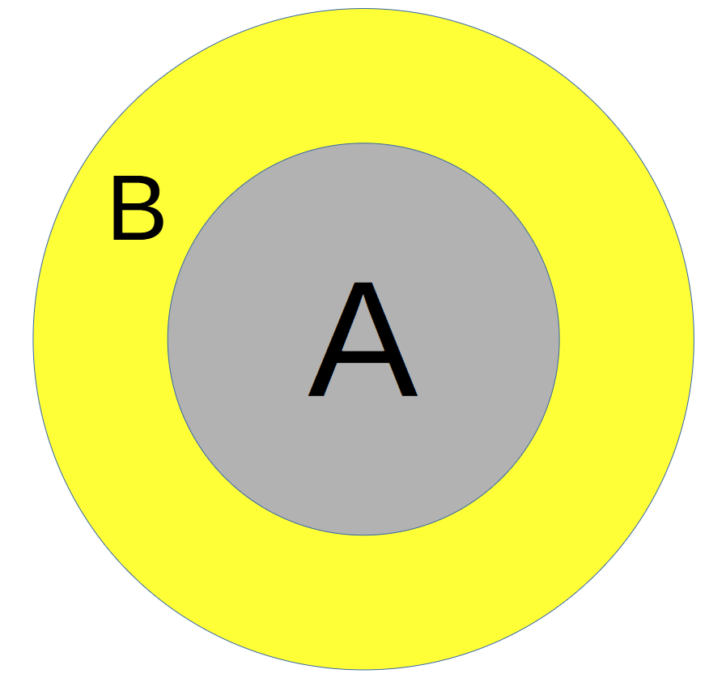
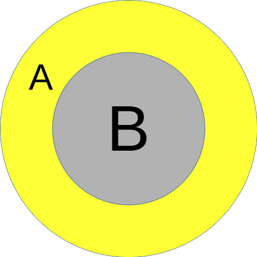
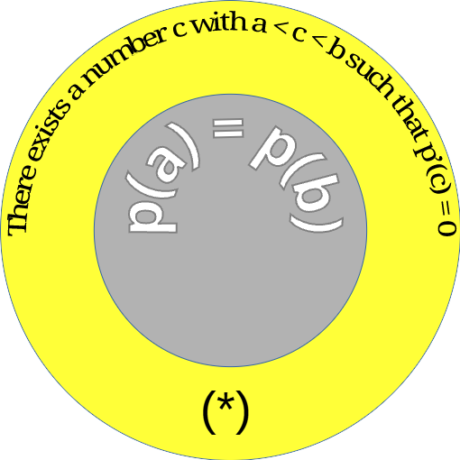
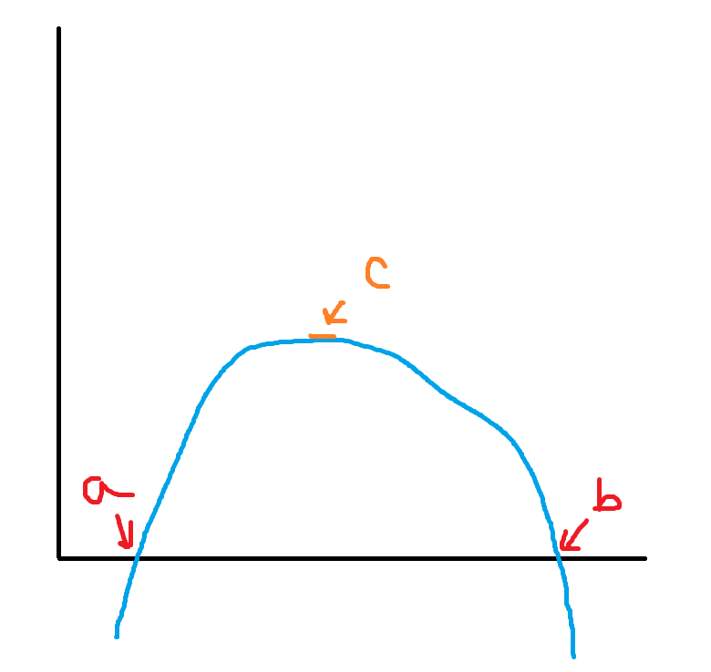
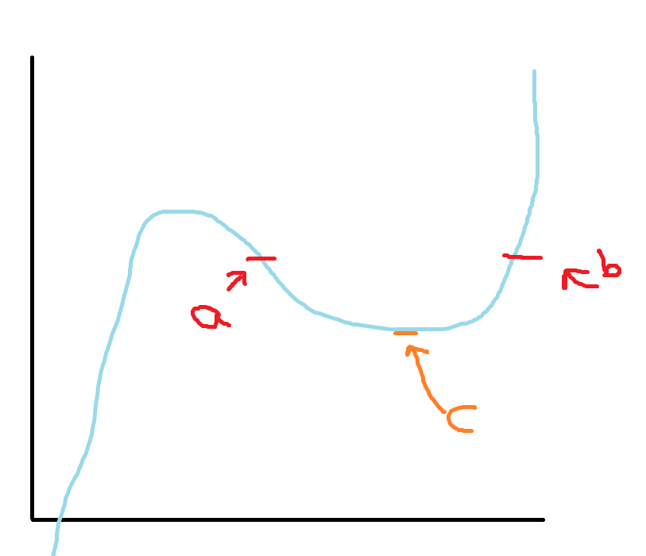
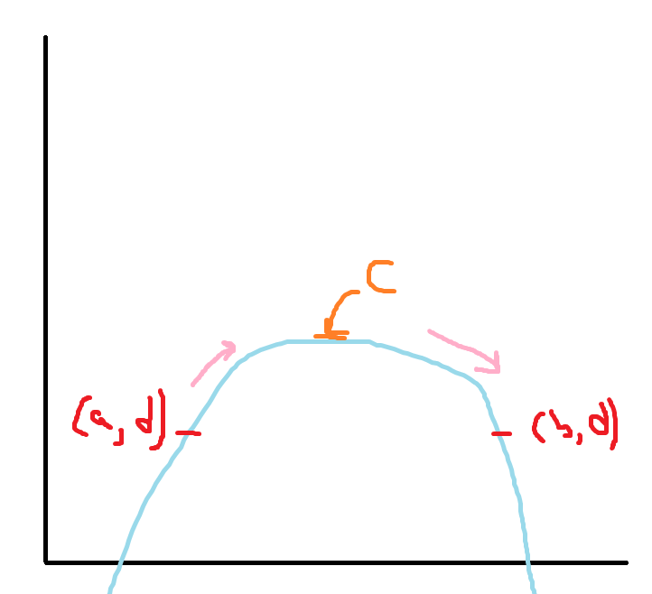
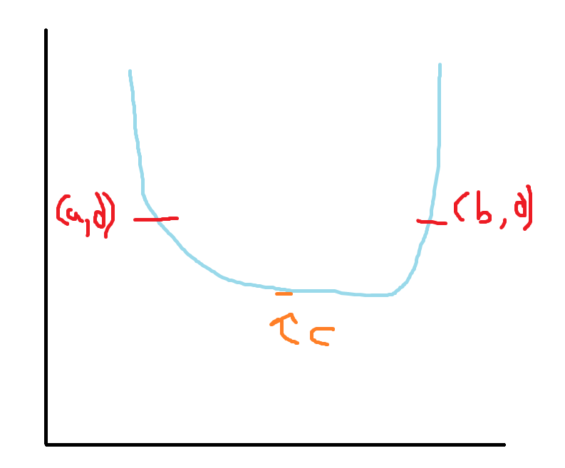
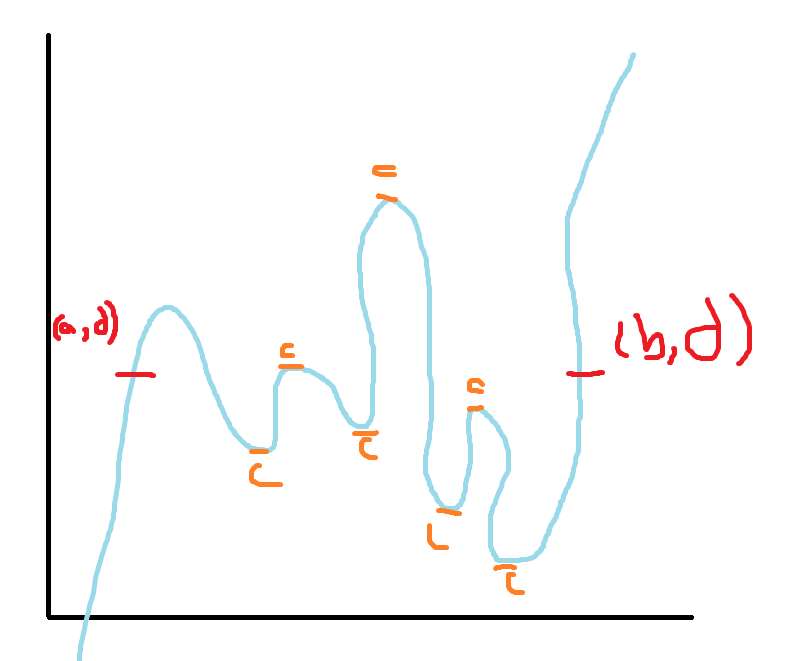
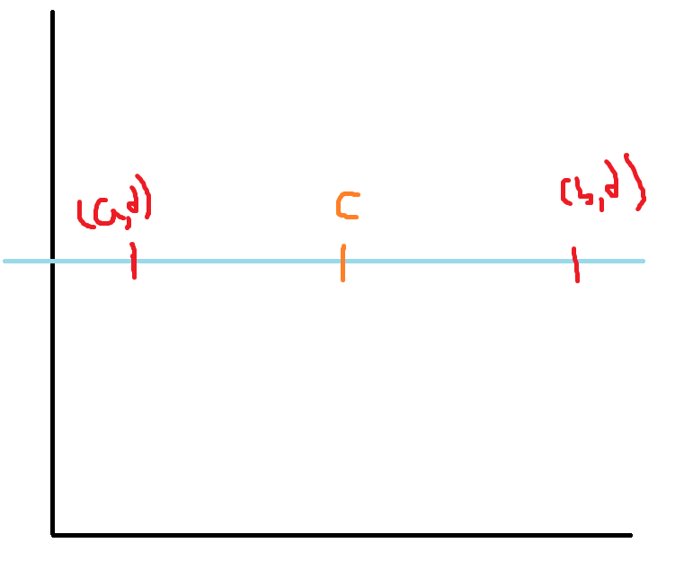
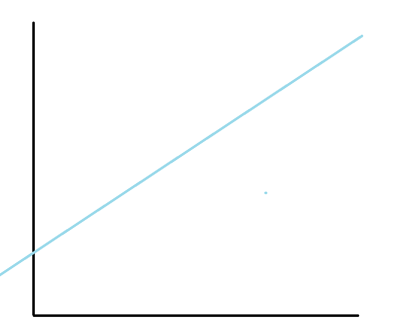

This work is entirely based off the TMUA
Logic Guide. I can thoroughly recommend reading said page if you
want a full understanding of these problems.
Quick look
If you already know what you are talking about, and just need a
simple refresher, here you go:
Short Form
Long Form
Mathematical Notation
English Form
A if B
If B then A
\(A \Leftarrow B\)
A is sufficient for B
A only if B
If A then B
\(A \Rightarrow B\)
A is necessary for B
A iff B
(if B then A) and (if A then B)
\(A \Leftrightarrow B\)
A is necessary and sufficient for B
Truth table:
A
B
A if B if B then A \(A
\Leftarrow B\)
A only if B If A then B \(A
\Rightarrow B\)
A iff B (if B then A) and (if A then B) \(A \Leftrightarrow B\)
T
T
T
T
T
T
F
T
F
F
F
T
F
T
F
F
F
T
T
T
Converse
The swapping of A and B
Statement
Converse
A if B
B if A
A only if B
B only if A
A iff B
B iff A
Contrapositive
The swapping and negating of A and B
Statement
Contrapositive
A if B
not A if not B
A only if B
not A only if not B
A iff B
not A iff not B
In the above cases, they are all logically equivalent.
Logic Gates
For logic gates, you only really need to remember the truth tables
and they are that simple.
A
B
A or B
A and B
not A
T
T
T
T
F
T
F
T
F
F
F
T
T
F
T
F
F
F
F
T
Necessary and Sufficient
I believe the best way to consider these problems is to consider them
as images, and then using these images, simply converting them into
if/only if/iff statements.
Take for example, the following statement,
A is necessary for B , what does this mean? If you don’t
have a conversion table this could be a difficult question to answer but
if you translate it into an image in your head, this can become much
easier. Let’s take the following image:

AinB
Given we have the B Circle and the
A Circle, what can you tell me about being in the
A Circle?
You should notice that being inside the A Circle
guarantees that we are in the B Circle. Do you know how we
can say this in mathematical terms?
If A then B because if we are in the
A Circle we must be in the B Circle; however,
if we are in the B Circle we are not necessarily in the
A Circle.
There is another term for this statement in maths:
A is sufficient for B. Therefore
A is sufficient for B is logically equivalent
toIf A then B.
Let’s look at another circle:

BinA
You should notice now that this circle has “swapped B and A”, in
maths we call this the converse of the above statement.
Let’s take the above statement A is sufficient for B and
look at its converse: B is sufficient for A (because we
must be in the A Circle if we are in the
B Circle). Therefore, the statement must be logically
equivalent to If B then A.
But, what if I asked you to write this statement in the form
A ... B. How would you go about doing that?
An alternative way of writing the above circle in English would be:
We need A to be true, if we want any chance of B being true.
In maths we call this A is necessary for B.
Note: there is then another statement:
A is necessary and sufficient for B , this is the same as
saying (A is necessary for B) and (A is sufficient for B)
which is logically equivalent to (A if B) and (B if A)->A iff B->\(A \Leftrightarrow B\)
How can I apply this?
The following is not true mathematical reasoning, unlike the full
proofs set out in TMUA it does not entirely prove or disprove it, it is
merely a way in which you can work things out, without needing to know
the exact mathematical theory behind it. This method uses (by choice)
badly drawn diagrams for the graphs because too many solutions in these
papers are described by using a perfect graph (I am thinking of you
\(\sqrt{x} = \sin (3x)\)) rather than a
solution you could actually discover with pen and paper.
On first learning this I really struggled to understand how I could
remember these, because these words and phrases seem to be plucked from
thin air. The way I go about this, is that I simply remember one of
these circles, and draw it whenever I get a question. Let’s go through
this with a question from TMUA (Paper 2 D413/02 November 2021 Q8):
Consider the following statement about the polynomial \(p(x)\), where \(a\) and \(b\) are real numbers with \(a < b\):
\[
\begin{aligned}
\text{(*) There exists a number } c \text{ with } a < c < b \text{
such that } p'(c) = 0.
\end{aligned}
\]
Which of the following is true?
The condition \(p(a) = p(b)\) is
necessary and sufficient
The condition \(p(a) = p(b)\) is
necessary but not sufficient
The condition \(p(a) = p(b)\) is
sufficient and not necessary
The condition \(p(a) = p(b)\) is
not necessary and not sufficient
First of all, I would convert ABCD to the equivalent if statements,
by drawing an image:
AinB
I then work out from the image what this is actually showing:
If A then B : A is sufficient for B. I can
then choose Option C, and substitute A and B from that.
In circle form this would now look like:

Statement in Star
Let’s rewrite ABCD in the if statement form:
(If \((*)\) then \(p(a) = p(b)\)) and (If \(p(a) = p(b)\) then (*))
If \((*)\) then \(p(a) = p(b)\)
If \(p(a) = p(b)\) then
(*)
not (If \((*)\) then \(p(a) = p(b)\)) or not (If \(p(a) = p(b)\) then (*))
Can you see how all these statements have their roots in (B) and (C)
so we can forget about (A) and (D) for now. Instead, go through both B
and C and try and:
Think of a case where it works (True) [If you can’t find one it is
false]
Think of a case where it doesn’t work (False) [If you can’t find one
it is true]
Let’s start by decoding what (*) means:
There is a value of x named c inbetween a and b which is a turning point.
In order to prove that an if statement is False, you
must find a case when X is true and Y is false (given
if X then Y)
Let’s start with (B):
\[
\text{if } (*) \text{ then } p(a) = p(b)
\]
Find a case where it is True:

Case where (B) is true
Here (*) is true: \(a < c <
b\) and \(p'(c)=0\) And
\(p(a) = p(b)\) Therefore it is an
example where the statement is true ([if True then True] = True)
Find a case where it is False:
Case where (B) is false
Here (*) is true: \(a < c <
b\) and \(p'(c)=0\) But
\(p(a) \neq p(b)\) Therefore it is an
example where the statement is false ([if True then False] = False)
We can now say, for a fact, that (B) is False. Let’s substitute the
value of (B) into our previous list of ABCD:
False and (If \(p(a) = p(b)\)
then (*))
False
If \(p(a) = p(b)\) then
(*)
True or not (If \(p(a) = p(b)\)
then (*))
This means we can instantly discard (A) because False and Anything =
False.
So we now have to possibilities:
If \(p(a) = p(b)\) then
(*)
True or not (If \(p(a) = p(b)\)
then (*))
Let’s take a look at (C) because it is common to both statements:
Find a case where it is true:

Case where (C) is true
We say \(p(a) = p(b)\), and then
look at (): For (): \(a < b <
c\) and \(p'(c) = 0\)
Therefore we have found a case where it is true.
Find a case where it is false:
Now I can’t think of a case where it is False, so I will now attempt
to prove it to be true.
We know that \(p(a) = p(b)\)
therefore we can give this a variable name: \(p(a) = p(b) = d\). Let’s look at the cases
in which a polynomial could arise:
Case 1: Strictly increasing

Strictly Increasing
If the polynomial is (strictly) increasing from point (a, d), at some
point it needs to start coming down in order to reach (b, d). Therefore,
it must have a turning point (c).
Case 2: Strictly decreasing

Strictly Decreasing
If the polynomial is (strictly) decreasing from the point (a, d), at
some point it must come up again to reach (b, d). Therefore, it must
have a turning point (c).
Case 3: Multiple turns

1664122856878
In this case, the polynomial is going up and down randomly in between
a and b, yet there are still possible values for c (in fact, there are
even more possible values!).
Case 4: Straight Line

Straight Line \(f(x) = 3\)
Take, for example, the graph \(f(x) =
3\), \(f'(x) = 0\) and
therefore there is also the possibility of c existing.
Case 5: Linear Line

Linear Line
The points \(p(a) = p(b)\) can’t
exist on this graph because it is not curved or flat. Moreover, if we
differentiate this, we will never get 0. Take for example: \(f(x) = 3x + 1\). Try and find a value for x
that is constant: \(f(x_1) = f(x_2)\);
\(3x_1 + 1 = 3x_2 + 1\); \(3x_1 = 3x_2\); \(x_1 = x_2\). Therefore we know that the
only possible value for \(p(a) = p(b)\)
is for \(a = b\) but we know that \(a < b\), therefore it is False for both
sides. And if false then false is logically equivalent to
true.
Therefore the answer is (c).
I hope this helped you understand the necessary and unnecessary, or
maybe it helped you learn how to answer Q8 (I hope this might be true at
least). I would thoroughly recommend going and reading the pdf attached
at the top of this page, because it excellently describes how to use
proofs (and it was written by Cambridge so it has to at least be ok
;)).